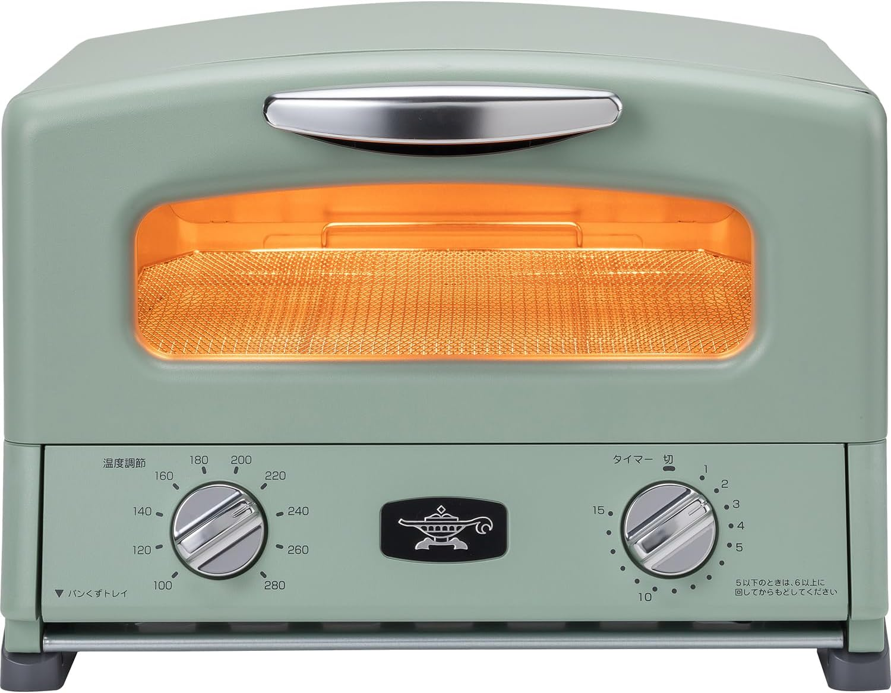

Aladdin グラファイトトースター｜「毎朝の食パン」が、別の食べ物になった話
トースターを変えただけで、食パンがこんなに変わるとは思っていなかった。

Aladdin グラファイトトースター 2枚焼き AET-GS13C
Amazonで確認
3,000円のトースターとの決定的な違い
長年、量販店で売っている3,000円台のトースターを使っていた。食パンは焼ける。ちゃんと焼ける。でも「美味しい」とは少し違う。表面がパリッとするかと思えば中がパサパサになり、逆に中がしっとりしていると表面に焼き色がつかない。そのどちらかになる。
アラジンのグラファイトトースターを初めて使った朝のことは、今でも覚えている。取り出した瞬間、表面がカリッという音。口に入れると、外側の食感とは裏腹に中がもちっとしている。同じ食パンなのに、質感が全く違う食べ物になっていた。
違いはヒーターの種類だ。たったそれだけで、毎朝の体験が変わる。
Aladdin グラファイトトースターとは
1919年創業のイギリスの老舗ブランド「Aladdin」が手がける、株式会社千石の特許技術「遠赤グラファイトヒーター」搭載のトースター。このヒーターが0.2秒で発熱し、最高温度1300℃まで上昇する。庫内が瞬時に高温になるため、食パンの水分を閉じ込めたまま表面だけを高速で焼き上げることができる。
AET-GS13Cは2枚焼きのスタンダードモデル。アナログダイヤルで温度とタイマーを設定するシンプルな操作系で、「マツコの知らない世界」でも紹介され、爆発的な人気となった一台だ。
主要スペック
| ヒーター | 遠赤グラファイトヒーター（特許技術）・0.2秒発熱 |
| 容量 | 2枚焼き |
| 温度設定 | 100〜280℃（20℃刻みダイヤル式） |
| タイマー | 最大15分（ダイヤル式） |
| 焼き上がり目安 | 約2〜2.5分 |
| 調理モード | トースト・もち・フライあたため・ピザ |
| カラー | グリーン・ホワイト |
使ってわかった、3つの本音
1. 「外カリ中モチ」は比喩じゃなく、本当にそうなる
普通のニクロムヒーターのトースターは、熱がゆっくり伝わる。その結果、食パンの内部まで熱が届くころには外側の水分が飛んでしまう。パサパサになるのはそのせいだ。
グラファイトヒーターは発熱が瞬時で、遠赤外線が食パンの表面だけを瞬間的に高温にする。2〜2.5分という短時間で焼き上がるため、中の水分が蒸発する前に表面が仕上がる。これが「外はカリッ、中はモチモチ」の物理的な理由だ。
理屈を知ってから食べると、余計に納得感がある。毎朝この食感が待っているというだけで、朝が少し楽しみになる。
2. 揚げ物の温め直しで、電子レンジとの差が出る
昨日の唐揚げ。翌日に電子レンジで温めると、衣がふにゃふにゃになる。あれは水分が閉じ込められるからで、電子レンジの構造上避けられない。
グラファイトトースターはメッシュ網で余分な油を落としながら高温で加熱する。唐揚げの衣が揚げたてに近い食感に戻る。コロッケ、天ぷら、春巻き——揚げ物全般で電子レンジとは別次元の温め直しができる。個人的には、このひとつの機能だけで購入を正当化できると思っている。
3. デザインが、キッチンの「格」を上げる
このレトロなフォルム。丸みのあるドーム型ボディ、アルミのハンドル、アナログのダイヤル——これがキッチンに置かれているだけで、空間の雰囲気が変わる。
バルミューダと並んで比較されることが多いが、アラジンはデザインだけでなく焼き上がりの「しっかり焼ける感」を重視する人に向いている。バルミューダがふんわりしっとり派なら、アラジンはカリッとパリッと派だ。どちらが正解ではなく、好みの問題。個人的には、食パンはカリッとしている方が好きなのでアラジン一択だった。
正直に書く、気になる点
焼きムラの問題は存在する。耳に近い端の部分が白いまま残ることがある。これはグラファイトヒーターが上部に1本しかなく、真ん中が最も熱くなる構造から生じる。気になる人はサードパーティのメッシュ焼き網（細かい目のもの）を使うと改善する、という報告が多い。
また本体の側面と天面がかなり熱くなる。設置スペースの両脇・上部に余裕を持たせることが必要で、棚の中への設置は推奨できない。本体が熱くなるのはグラファイトヒーターの特性でもある。
アナログダイヤルは直感的で好きだが、細かい温度設定はできない。200℃に設定したいのに160か220しか選べない、というケースがある。厳密な温度管理が必要な料理には上位のマイコン制御モデル（AET-GP14B等）の方が向いている。
こんな人に向いている
- 毎朝食パンを食べていて、今より美味しく焼きたい人
- 揚げ物の温め直しに電子レンジで不満を感じている人
- キッチンにおしゃれな家電を置きたい人
- シンプルな操作で使いたい人（アナログ派）
- バルミューダより「カリッとした食感」が好みの人
総評
「トースターに1万円以上出す必要があるのか」という問いへの答えは、使えば一発で出る。毎朝の食パンがここまで変わるなら、その投資は十分に元が取れる。
グラファイトヒーターという技術はアラジンが特許を持ち、他のトースターでは再現できない。0.2秒発熱・外カリ中モチ——これはマーケティングではなく、物理的な仕組みに裏打ちされた特性だ。毎朝の食パンを少し幸せな時間にしたいなら、アラジンのグラファイトトースターはその答えになる。
Aladdin グラファイトトースター 2枚焼き AET-GS13C
Amazonで確認